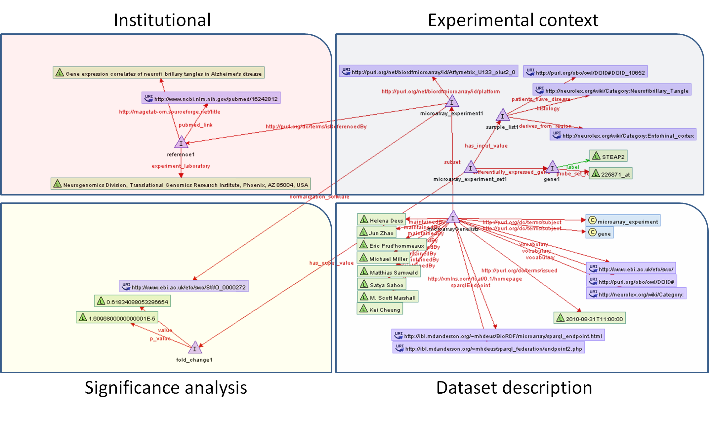

| Provenance of Microarray Experiments - for a Better Understanding of Experiment Results |
|---|
Introduction Microarray experiments provide insights into the molecular mechanisms that lead to disease. The typical outcome of a microarray experiment is a list of differentially expressed genes that are potential targets for gene therapy and can lead to further studies of disease affected pathways. In these case study, we have collected 3 such genelists associated with Alzheimer's disease and represented the various levels of provenance RDF. |
|
Quick Links:
|
The Data Model: (hide/show)
The data model to describe microarray experiments can be separated in four provenance levels. Each level entails different subsets of information: the laboratory where the experiment was performed and the reference where the results were published are part of the institutional level; the samples used in the experiment, the list of differentially expressed genes and the disease being studied are part of the experimental context level; the statistical and significance analysis tools and results are part of the statistical and significance analysis level and the metadata regarding the dataset itself is part of the dataset description level.
 |
Example Queries: (Hint - click on the query to see it in the textarea) |
| Output format (if supported by query type): |
|
|